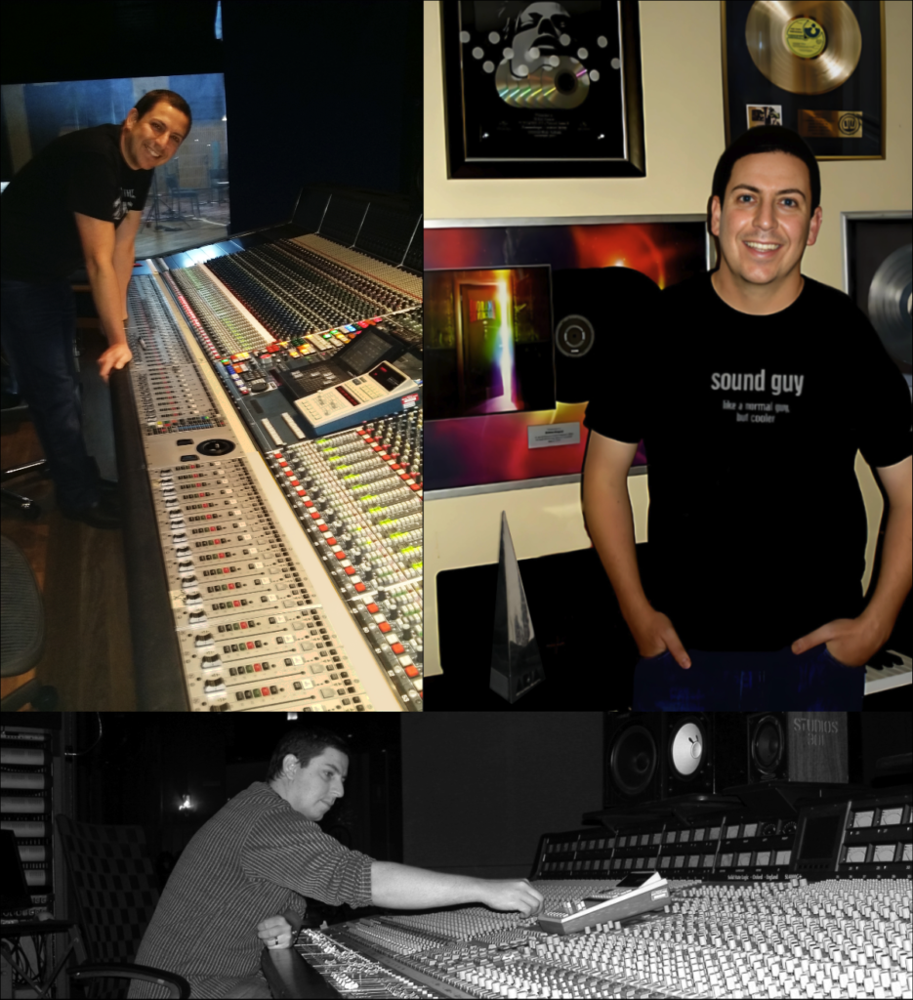
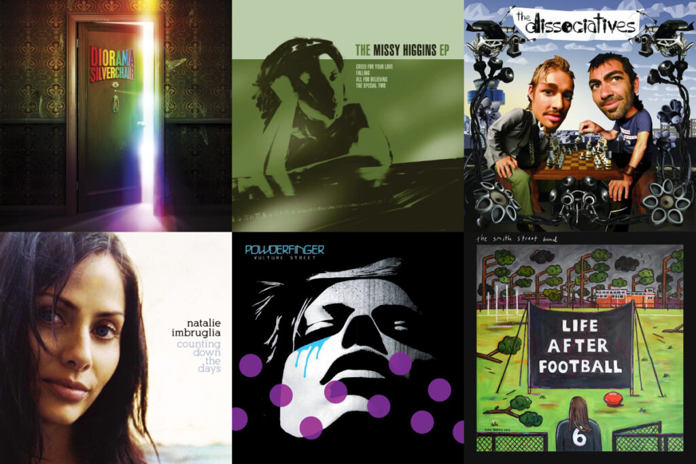
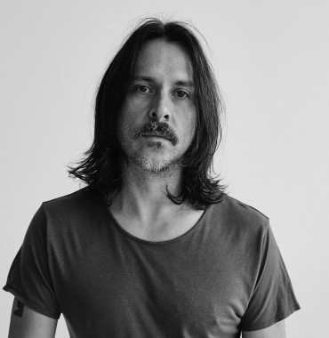
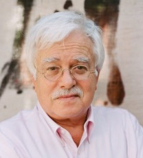
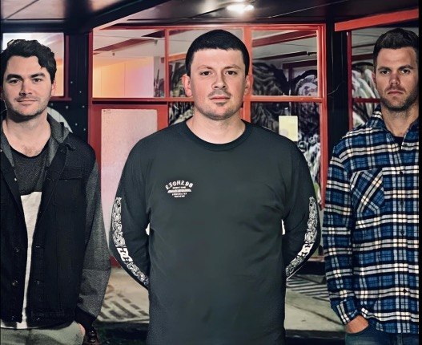
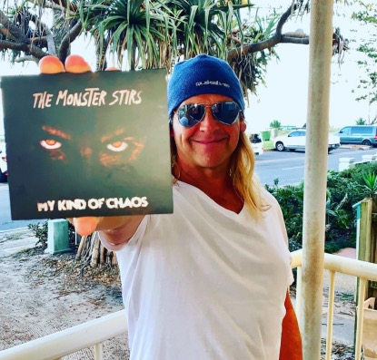
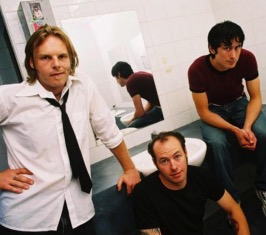

Evaluation
Take your time, and listen in your own environment – at home, in the car etc. This approach allows for thoughtful feedback, unlike hasty decisions made in the studio.

ARIA Award-Winning Mixing Engineer
I'm a Sydney based mixing engineer and staunch Australian music supporter. My sole focus is on helping my clients get the absolute best out of their music via internationally-competitive mixes.
I love working with both established and emerging bands – so touch base if you have a recording project on the go and would like to chat about mixing.
Mixing
Since the 90's I've produced, engineered and mixed singles, EP's and albums for hundreds of indie bands, plus some of Australia's biggest artists.
Notable works include silverchair's Diorama album (for which I was awarded the 2002 ARIA Engineer of the Year), plus collaborations with Powderfinger, Missy Higgins, The Superjesus, Birds of Tokyo and Daniel Johns.
In recent years I've focused primarily on mixing via an online service designed to produce exceptional results at indie-friendly rates.
Listen

"I call Anton when I want a studio session to run like clockwork, and need my drums to sound absolutely awesome. Just a great engineer that always delivers the goods with professionalism and style."
"Anton made all of our ideas sound better and added so much life and energy to every song. He's super easy to talk to and work with and we'll definitely make something together again - if he will have us!"

"You sir, are a scholar and gentleman - and it's all sounding really bloody great mate!"
"Anton is an absolute legend. Production conversations flow freely and he has an innate ability to tap into our sound, so we can spend more of our time on the songwriting. No challenge is too great - you won't be disappointed!"
"I did a lot research before approaching Anton to mix my song, and it really paid off. He's an incredible engineer but what you are also getting is his musical knowledge. The final mix was fantastic - highly recommended."

"Anton is a wizard! We recorded our EP in a lounge room and it came back sounding like a big budget album from back in the hay day! Anton is a pro and a pleasure to work with, and we're stoked with the results."

"We will never use anyone else to mix our music. Working with Anton has been the highlight of my music career! From the moment I met him I was truly blown away with his talent and kindness."
"Anton is such a seasoned pro. He seems to instantly understand where you're at artistically and the mix was everything we had hoped for. He completely blew us away with the results."

"Hands down the best mixes we have ever had. Anton was fantastic to deal with, gave us great guidance and we couldn't be happier. Highly recommended, he really brought the best out in our recordings."
“Mixing is a crucial, make-or-break stage in the production process.”
Over the years I’ve found that having artists sit around for hours as I work on a song is counter-productive. Getting feedback from their fresh ears when the mix is finished is a far better approach.
Online mixing is pretty simple – you send me your multitrack files which I mix at my studio, at my own pace and without distractions. When complete, I will send you the mix for your approval and/or tweaks.
Take your time, and listen in your own environment – at home, in the car etc. This approach allows for thoughtful feedback, unlike hasty decisions made in the studio.
I can revisit the mix a few days later to implement any changes you may have. This flexibility is difficult to achieve in traditional studios, where revisions are slow and costly.
Commercial studios are expensive, and there is always a certain amount of clock-watching. Working from my own studio means I can offer an affordable service without compromising on quality.
How it works
You’ll receive detailed instructions once booked in, but the short version is:
Render
Upload
Mix
Deliver
Prepare